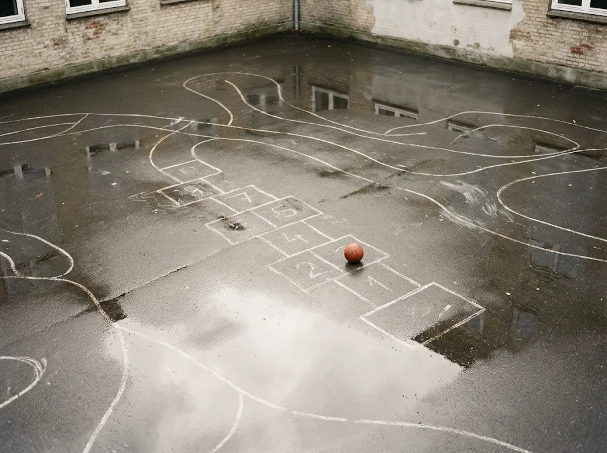
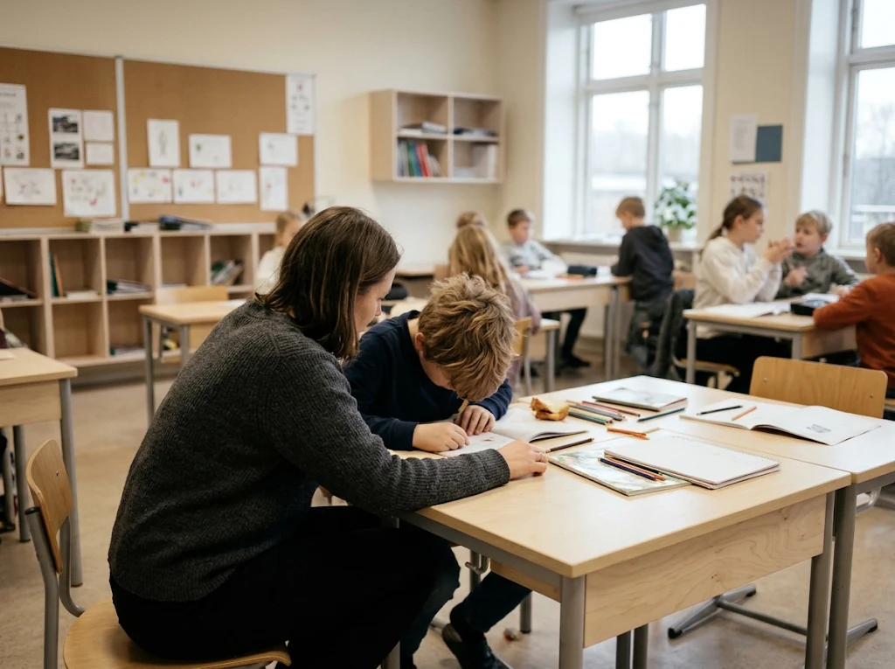

Hvad tilbyder Næste Skridt?
Vi hjælper jer med at finde en vej fra udfordring til handling.


Find jeres næste skridt
Et praksisnært udviklingsforløb for forældre, skoler og kommuner, der skal fra en kompleks udfordring til konkret handling.
I arbejder sammen med os gennem hele forløbet. Vi hjælper jer med at finde det rigtige spørgsmål, skabe overblik og få noget til at ske.
Seks trin fra udfordring til handling
De seks trin gælder for forældre, skoler og kommuner.
- 1AfdækHvor står I?
- 2ForståHvad er egentlig på spil?
- 3PrioritérHvad skal vi gøre først?
- 4HandleHvad skal ske i praksis?
- 5Følg opVirker det?
- 6LærHvad tager vi med videre?
Trin 1, Afdæk: Hvor står vi?
Vi starter ikke med løsningen. Vi starter med at forstå situationen.
- Hvad oplever børnene?
- Hvad oplever forældrene?
- Hvad oplever medarbejderne?
- Hvad ser ledelsen?
- Hvad ser kommunen?
- Hvad fortæller data?
- Hvad sker der i praksis?
- Og hvor er der forskel på det, vi tror sker, og det der faktisk sker?
Resultat Et fælles billede af situationen.
Trin 2, Forstå: Hvad er det egentlig, der er på spil?
Komplekse udfordringer har sjældent én årsag. Vi går derfor et lag dybere.
Vi kobler data, faglig viden og det, vi ser i praksis. Vi leder efter mønstre.
Resultat En skarpere forståelse af, hvad der skal arbejdes med.
Trin 3, Prioritér: Hvad skal vi gøre først?
Man kan ikke løse alt på én gang. Derfor hjælper vi med at vælge.
- Hvad er vigtigst?
- Hvad kan flytte noget?
- Hvad giver mening hos jer?
- Hvad skal vi lade være med at gøre?
Resultat Et konkret fokus og en fælles retning.
Trin 4, Handle: Så gør vi det
Nu skal det kunne mærkes i hverdagen. Vi arbejder sammen med dem, der skal få det til at fungere.
Det kan være gennem:
Resultat Noget nyt bliver prøvet af i virkeligheden.
Trin 5, Følg op: Virker det?
Vi slipper ikke, fordi planen er lavet. Vi følger op.
- Hvad sker der?
- Hvad virker?
- Hvad gør ikke?
- Hvad har vi lært?
Så justerer vi.
Resultat Forandring, der bliver klogere undervejs.
Trin 6, Lær: Hvad skal leve videre?
Det sidste skridt handler om at gøre jer mindre afhængige af os. Det, der virker, skal kunne leve videre hos jer.
Vi hjælper med at få erfaringerne ind i:
Resultat Et stærkere ståsted.
Lad os tage en snak.
Ring eller skriv, så finder vi et tidspunkt.